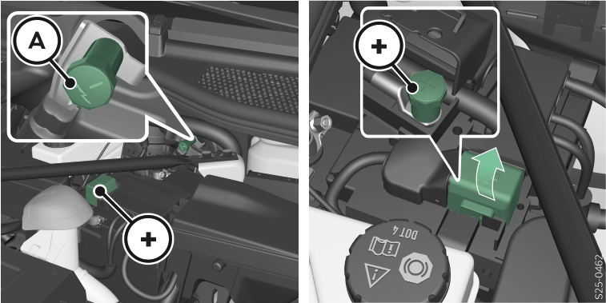

Contrôler l’état
L'état de la batterie 12 volts du véhicule est vérifié lors de l'inspection chez un garage spécialisé.
Vérifier le niveau d’électrolyte
Les informations suivantes s’appliquent à une batterie 12 V avec indicateur du niveau d’électrolyte.

Ouvrir le capot avant Capot avant.
Dégager la batterie 12 V Composants sous le capot avant.
Tapoter sur l’indicateur afin d’éliminer les bulles d’air.
Couleur noire – le niveau d’acide est correct.
Incolore ou coloration jaune clair – le niveau d’acide est insuffisant, il faut remplacer la batterie 12 volts du véhicule.
Reposer le cache gauche pour la zone située sous le capot avant, le bouchon du réservoir de lave-glace ainsi que le rangement Composants sous le capot avant.
Fermer le capot avant.
Processus de recharge

MISE EN GARDE
Risque d’explosion !
De l’hydrogène est libéré pendant la charge. Une explosion peut également être provoquée par des étincelles en débranchant ou défaisant la fiche du câble.
Ne chargez jamais une batterie 12 volts gelée ou décongelée.
Ne pas réaliser de charge rapide de la batterie 12 volts du véhicule soi-même, faire appel à une entreprise spécialisée.
La batterie 12 volts du véhicule est chargée automatiquement lorsque la batterie haute tension est chargée.
Il peut être possible de charger la batterie 12 volts du véhicule à l'aide d'un chargeur 12 volts.

AVERTISSEMENT
Risque d'endommager la batterie 12 volts du véhicule !
Afin de recharger entièrement la batterie 12 volts du véhicule, régler un courant de recharge de 0,1 fois max. la capacité de la batterie.
Conditions requises pour la recharge
Contact coupé
Consommateur de courant arrêté
Avant de procéder à la recharge
Ouvrir le capot avant Capot avant.
Dégager la batterie 12 V ainsi que le point de masse Composants sous le capot avant.
Processus de recharge

 pôle pour charger la batterie
pôle pour charger la batterie- A
Point de masse
- +
 Pôle pour recharger la batterie 12 V (sous le capuchon)
Pôle pour recharger la batterie 12 V (sous le capuchon)
Ouvrir le capuchon du pôle
 .
.Brancher la pince
 du chargeur au pôle
du chargeur au pôle  .
.Brancher la borne
 du chargeur de batterie au point de masse A.
du chargeur de batterie au point de masse A.Branchez le câble réseau du chargeur sur la prise et allumez l’appareil.
Après la charge, éteindre le chargeur et débrancher le cordon d’alimentation de la prise secteur.
Débrancher les bornes du chargeur de la batterie 12 volts du véhicule.
Enclencher le capuchon du pôle
 .
.

Après la recharge
Reposer le cache gauche pour la zone située sous le capot avant, le bouchon du réservoir de lave-glace ainsi que le rangement Composants sous le capot avant.
Fermer le capot avant.
AVERTISSEMENT
Risque d'endommager la batterie 12 volts du véhicule !
La batterie 12 volts du véhicule déchargée peut geler facilement !